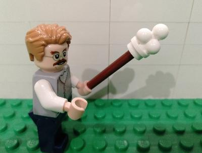

JavaScriptを使ったアニメーションを紹介します。
本ページはGitHub Pagesで構築されてますので、修正・加筆等あればお気軽にPushください。
今回学ぶのはこちらのアニメーションです。
画像の位置を時々刻々変化させ画像が移動しているように見せています。
今回の設定
| 画面の更新頻度 | 50msに1回 (1秒間に20回画面を更新) |
| 画像の移動距離 | 約4秒で1画面幅分の移動 (1回の更新で画面幅/20/4px) |
今回はこちらのスクリプトについて解説します。
<script type="text/javascript">
window.onload = function() {
var area_width = window.innerWidth;
var period = parseInt(1000/20);
var step = parseInt(area_width/period/4);
var flag = true;
var position = 0;
setInterval(function() {
area_width = window.innerWidth;
if (flag == true){
position = position + step;
}else if (flag == false){
position = position - step;
}
ID_OBJECT.style.left = position + 'px';
if (position > area_width - 250) flag = false;
if (position < 0) flag =true;
}, period);
};
</script>
window.onloadに関数を設定します。関数内の処理がウィンドウ表示時に実行されます。
window.onload = function() {
... 実行される処理 ...
};
画面幅。window.innerWidthで取得してます。
var area_width = window.innerWidth;
画面の更新頻度。1000msに20回更新させるため、周期を1000/20で算出してます。算出値をparseInt関数で整数値に変換してます。
var period = parseInt(1000/20);
画像の移動距離。約4秒で1画面幅分の移動をさせるため、画面幅を周期×4で割っています。こちらも算出値をparseInt関数で整数値に変換してます。
var step = parseInt(area_width/period/4);
フラグ。画面端に着いたら反対方向へ移動させるためのフラグです。往路をflag=true,復路をflag=falseとしています。
var flag = true;
ポジション。画像位置です。初期値0としてます。こちらの値が時々刻々変化していきます。
var position = 0;
setInterval関数を使って定期処理を実施します。 1つめの引数には処理を、2つめの引数には時間を指定します。 時間の単位はミリ秒です。
関数のプロトタイプ
setInterval(処理、時間);
今回の引数
setInterval(function()、period);
function()の処理
function() {
area_width = window.innerWidth;
if (flag == true){
position = position + step;
}else if (flag == false){
position = position - step;
}
ID_OBJECT.style.left = position + 'px';
if (position > area_width - 250) flag = false;
if (position < 0) flag =true;
};
function()処理の中でのpositionの値を設定しています。往路の場合はstepを加算し、復路の場合は減算しています。
実際に作成したJavaScriptはこちら
難しかったですね。作成したJavaScriptも改良の余地ありです。